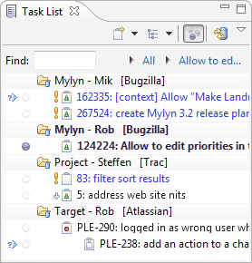

The scope of the Mylyn Tasks project is integration with Agile, issue, bug and defect tracking servers. The project provides rich task editing, task list management and offline synchronization for ALM servers. The Tasks project is the central portion of the ALM integration framework used by Mylyn.
